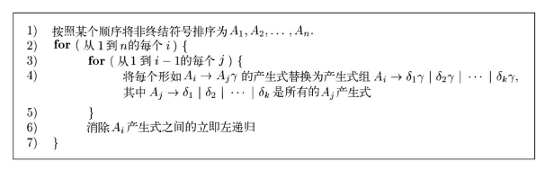

语法分析｜上下文无关语法
语法分析
引论
-
编译器中常用的方法可以分为：
- 自顶向下 (Top-Down Parser): 从语法分析树的顶部（根结点）开始向底部（叶子结点）构造语法分析树
- 自底向上 (Bottom-Up Parser): 从叶子结点开始，逐渐向根结点方向构造
- 这两种分析方法中，语法分析器的输入总是按照
从左向右的方式被扫描，每次扫描一个符号
-
高效的自顶向下和自底向上的解析器只能在
上下文无关文法的子类中实现- LL for top-down parsing
- LR for bottom-up parsing
- 语法分析器从词法分析器获得一个由词法单元组成的串
- 词法单元是最小的单位
- 在语法分析器中：
- 使用上下文无关语法 (CFG) 来检查词法单元的结构
- 构造语法分析树
- 报告语法错误并能从常见的错误中恢复并继续处理程序的其余部分
- 错误恢复的策略
- 恐慌模式(Panic Mode)
- 语法分析器一旦发现错误就不断丢弃输入中的符号，一次丢弃一个符号，直到找到同步词法单元(synchronizing token)集合中的某个元素为止
- 同步词法单元通常是界限符，(end,’;’,’}’,etc.)
- 编译器的设计者必须为源语言选择适当的同步词法单元
- 缺点：恐慌模式的错误纠正方法常常会跳过大量输入，不检查被跳过部分的其他错误
- 优点：它很简单，并且能够保证不会进入无限循环
- 语法分析器一旦发现错误就不断丢弃输入中的符号，一次丢弃一个符号，直到找到同步词法单元(synchronizing token)集合中的某个元素为止
- 短语层次的恢复
- 当发现一个错误时，语法分析器可以在余下的输入上进行局部性纠正
- 它可能将余下输入的某个前缀替换为另一个串，使语法分析器可以继续分析
- 常用的局部纠正方法包括：
- 将一个逗号替换为分号
- 删除一个多余的分号或者插入一个遗漏的分号
- 如何选择局部纠正方法是由编译器设计者决定的
- 主要的不足在于它难以处理实际错误发生在被检测位置之前的情况
- 当发现一个错误时，语法分析器可以在余下的输入上进行局部性纠正
- 错误产生式(Error Productions)
- 通过预测可能遇到的常见错误，可以在当前语言的文法中加入特殊的产生式
- 这些产生式能够产生含有错误的构造，从而基于增加了错误产生式的文法构造得到一个语法分析器
- 如果语法分析过程中使用了某个错误产生式，语法分析器就检测到了一个预期的错误
- 语法分析器能够据此生成适当的错误诊断信息，指出在输入中识别出的错误构造
- 全局纠正(Global Correction)
- 理想状态，难实现
- 恐慌模式(Panic Mode)
上下文无关文法
context-free grammar (CFG)
上下文无关文法的正式定义
- 终结符(terminals)
- 组成串的基本符号
- 是
词法单元的集合
- 非终结符(non-terminals)
- 表示串的集合的
语法变量 - 非终结符号表示的串集合用于定义由文法生成的语言
- 表示串的集合的
- 开始符号(start symbol)
- 在一个文法中，某个
非终结符号被指定为开始符号 - 这个符号表示的串集合就是这个文法生成的语言
- 在一个文法中，某个
- 产生式(productions rules)
- 一个文法的产生式描述了将终结符号和非终结符号组合成串的方法
- 每个产生式由下列元素组成：
- 一个被称为
产生式头或左部的非终结符号。这个产生式定义了这个头所代表的串集合的一部分 - 符号 有时也使用 来替代箭头
- 一个由零个或多个终结符号与非终结符号组成的产生式体或右部。产生式体中的成分描述了产生式头上的非终结符号所对应的串的某种构造方法
- 一个被称为
符号表示的约定
- 当讨论程序设计语言的构造时，大写字母可以用于表示代表程序构造的非终结符号
- T: 终结符 / 词法单元
- NT: 非终结符
- S: 开始符，定义了语言的所有串
- PR: 产生式规则，指示如何将 T 和 NT 组合以生成语言的有效字符串
推导
-
将产生式看作重写规则，就可以从推导的角度精确地描述构造语法分析树的方法
- 从开始符号出发，每个重写步骤把一个非终结符号替换为它的某个产生式的体
-
以下给出推导的一般性定义
- 考虑一个文法符号序列中间的非终结符号 A, 如 , 其中 是任意的文法符号串。
- 假设 是一个产生式，那么写作
- 符号 表示
通过一步推出
- 符号 表示
- 当一个推到序列 将 替换为 ，我们说 推导出
- 用符号 表示
经过零步或多步推出；用符号表示经过一步或多步推出
-
如果 ，其中 S 是文法 G 的开始符号，那么 是 G 的一个 句型
- 一个句型可能既包含终结符号又包含非终结符号，也可能是空串
- 文法 G 的一个句子(sentence) 是
不包含非终结符的句型 - 一个文法生成的 语言 是它所有句子的集合
- 可以由文法生成的语言称为 上下文无关语言(context-free language)
-
在推导中，每个非终结符都被替换为同一个产生式体，但是替换顺序有所不同，我们将考虑在每个推导步骤中被替换的非终结符的选择：
- 在 最左推导(leftmost derivation) 中，总是选择每个句型的
最左非终结符号- 如果 是一个推导步骤，且被替换的是 中的最左非终结符，我们写作
- 在 最右推导(rightmost derivation) 中，总是选择最右边的非终结符号，此时我们写作
- 在 最左推导(leftmost derivation) 中，总是选择每个句型的
-
自顶向下语法分析树用来寻找一个给定程序的最左推导，而自底向上语法分析树则寻找给定程序的最右推导
语法分析树和推导
-
语法分析树是推导的图形表示形式
- 语法分析树的每个内部结点表示一个产生式的应用
- 该内部结点的标号是此产生式头中的非终结符号A
- 这个结点的子结点的标号从左到右组成了在推导过程中替换这个A的产生式体
- 一棵语法分析树的叶子结点的标号既可以是非终结符号，也可以是终结符号
- 从左到右排列这些符号就可以得到一个句型，它称为这棵树的结果（yield）或边缘（frontier）
- 语法分析树的每个内部结点表示一个产生式的应用
-
以文法 为例，展示串 - (id + id) 的语法分析树
- 在语法分析树和最左推导/最右推导之间存在一对一的关系，每一棵语法分析树都和唯一的最左推导及唯一的最右推导相关联
二义性(Ambiguity)
- 如果一个文法可以为某个句子生成多棵语法分析树，那么它就是 二义性（ambiguous）
- 二义性文法就是对同一个句子有多个最左推导或多个最右推导的文法
例：算术表达式文法允许句子id + id * id具有两个最左推导：
相应的语法分析树如图所示
按照惯例，应该将运算符 * 当作优先级高于+的运算符来处理，相应地，我们通常将a + b * c这样的表达式按照 a +（b * c），而不是（a + b）* c 的方式进行求值
- 大部分语法分析器都期望文法是无二义性的
- 在某些情况下，使用经过精心选择的二义性文法也可以带来方便
- 但同时需要使用消二义性规则（disambiguating rule）来“抛弃”不想要的语法分析树，只为每个句子留下一棵语法分析树
设计文法
消除二义性
- 限定符号的优先顺序
- 根据优先级和结合性规则，可以对含有歧义算子的二义性文法进行消歧。
- 考虑如下的 “悬空 - else” 文法中的二义性：
- 这个文法是二义性的，因为串 有下图所示的两颗语法分析树
-
通用的规则是 “每个else和最近的尚未匹配的then匹配。”
- 从理论上讲，这个消除二义性规则可以用一个文法直接表示，但是在实践中很少用产生式来表示该规则
-
可以将上文的二义性文法改写为无二义性文法
- 基本思想是在一个 then 和一个 else 之间出现的语句必须是
“已匹配的” - 也就是说，中间的语句不能以一个尚未匹配的（或者说开放的）then 结尾
- 一个已匹配的语句要么是一个不包含开放语句的if-then-else语句，要么是一个非条件语句
- 基本思想是在一个 then 和一个 else 之间出现的语句必须是
消除左递归
- 如果一个文法中有一个
非终结符号A 使得对某个串 存在一个推导 那么这个文法就是左递归的 (left recursive)- 自顶向下语法分析方法不能处理左递归的文法，因此需要一个转换方法来消除左递归
- 左递归可能出现在推导的单个步骤中(immediate left-recursion 直接左递归) ，也可能出现在推导的多个步骤中
- 自顶向下的解析技术不能处理左递归语法
-
立即左递归可以使用下面的技术消除，该技术可以处理任意数量的 A 产生式。首先将 A 的全部产生式分组如下：
- 其中 都不以 A 开头。然后，将这些 A 产生式替换为：
- 非终结符号A生成的串和替换之前生成的串一样，但不再是左递归的
- 这个过程消除了所有和 A 和 A′ 的产生式相关的左递归（前提是 都不是∈）
- 其中 都不以 A 开头。然后，将这些 A 产生式替换为：
-
但是它没有消除那些因为两步或多步推导而产生的左递归。比如，考虑文法
- 因为 , 所以非终结符号 S 仍然是左递归的，但不是立即左递归
- 下面的算法系统地消除了文法中的左递归。如果文法中不存在环 （形如 的推导）或 ∈ 产生式（形如 的产生式），就保证能够消除左递归。环和∈产生式都可以从文法中系统地消除

- 图中的过程的工作原理如下
- 在 i=1 的第一次迭代中，第 2～7 行的外层循环消除了 A1 产生式之间的所有立即左递归。
- 因此，余下的所有形如A1 → Alα 的产生式都一定满足 l > 1。
- 在外层循环的第 i-1 次迭代之后，任何产生式 Ak → Alα 都必然满足 l>k
- 在第 i 次迭代中，第 3～5 行的内层循环不断提高所有形如 Ai → Amα 的产生式中 m 的下界，直到 m≥i 成立为止
- 第 6 行消除了 Ai 产生式中的立即左递归，保证 m>i 成立
- 在 i=1 的第一次迭代中，第 2～7 行的外层循环消除了 A1 产生式之间的所有立即左递归。
- 示例，考虑没有立即左递归的文法
- 将非终结符号排序为S，A
- 在S产生式之间没有立即左递归，因此在 i=1 的外层循环中不进行任何处理
- 当 i=2 时，替换 A → Sd 中的 S，得到如下的 A 产生式
- 消除这些A产生式之间的立即左递归，得到如下的文法
提取左公因子
- 提取左公因子是一种文法转换方法，它可以产生适用于预测分析技术或自顶向下分析技术的文法
- 当不清楚应该在两个A产生式中如何选择时，我们可以通过改写产生式来推后这个决定，等我们读入了足够多的输入，获得足够信息后再做出正确选择
比如，我们有两个产生式
在看到输入 if 的时候，我们不能立刻指出应该选择哪个产生式来展开 stmt
- 一般来说，如果 是两个 A 产生式，并且输入的开头是从 推导得到的一个非空串，那么我们就不知道将 A 展开为 还是
- 然而，我们可以将 A 展开为 ，从而将决定的时间往后延
- 在读入了从 推导得到的输入前缀之后，我们再决定将 A’ 展开为 或
- 也就是说通过提取左公因子，原来的产生式变成了
- 算法：对一个文法提取左公因子
- 对于每个非终结符号 A，找出它的两个或多个选项之间的最长公共前缀 α
- 如果 α≠∈，即存在一个非平凡的公共前缀，那么将所有 A 产生式 A → αβ1 | αβ2 | … | αβn | γ，替换为
- A → αA′ | γ
- A′ → β1 | β2 | … | βn
- 其中，γ 表示所有不以 α 开头的产生式体；A′ 是一个新的非终结符号。不断应用这个转换，直到每个非终结符号的任意两个产生式体都没有公共前缀为止
非上下文无关语言的构造
-
在常见的程序设计语言中，可以找到少量不能仅用文法描述的语法构造
-
L1 = { c | is in (a|b)*}
- L1 包含了所有符合以下要求的字，字中包含两个相同的由 a，b 所组成串，且中间以 c 隔开，比如 aabcaab
- 这个例子中的语言抽象地表示了检查标识符在程序中先声明后使用的问题。
- 出于这个原因，C或者Java的文法不区分由不同字符串组成的标识符。
- 所有的标识符在文法中都被表示为像id这样的词法单元。在这些语言的编译器中，标识符是否先声明后使用是在语义分析阶段检查的。
-
L2 = {anbmcndm | n 1 and m 1 }
- 这个例子中的非上下文无关语言抽象地表示了参数个数检查的问题
- 它检查一个函数声明中的形式参数个数是否等于该函数的某次使用中的实在参数个数。
- 声明两个函数(一个带 n 个参数，另一个带 m 个参数) ，然后用实际参数调用它们
本博客所有文章除特别声明外，均采用 CC BY-SA 4.0 协议 ，转载请注明出处！